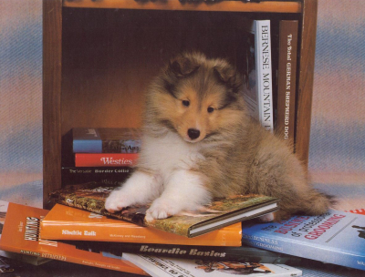

First official log! / 17th October, 2026
Ohhh it's hard to start stuff like that. I've been planning to have a retrospective log at the end of every month, but I really need to put at least any diary entry here to test everything and to figure out a template I'd be content with, sooo here we go!
October so far was...Well, weird I'd say. My sleeping schedule is barely horrific and I desperately need to fix it. I'm slowly turning into female Joker as I see the sun becomes extremely rare guest (which I'm okay when I'm outdoors, I'm unironically attached to autumn's brown-grey shades, but when I'm indoors and all I see through the window is gray gray sky above the gray gray houses, I literally don't want to start my day which makes me Extra apathetic) and as the skin on my face gets so flaky my attempts to manage the damage with moistening barely does anything. And the job-hunting anxiety along with long-procrastinated health issues are not helping at all.
My fixation on this site is so far both a curse and a blessing. On one hand, finally working and something I've been dreaming about for years feels good, as well as generally indulging into something that shows quick results always makes inner serotonin machine go brrr. On other hand, I use it as excuse to procrastinate various objectively more important things, and I've only been doing super quick sketches recently which I'm not happy with. And I've broken my mimo strike, forgetting about the app for...3 days in a row already. That isn't much, but ngl it did upset me a bit. And, well, as I said, actually important stuff im not elaborating on here was also affected. Not the end of the world, but I Really need to finish what I've planned here as a musthave so I can actually become more chill about instantly updating it. So I'm definitely making Characters (strictly a placeholder for now), credits and site map, and Probably begin working on resources and media yaps. After that I'm hopefully letting other people know that the site exists (we don't talk about how insecure to do it I feel, that's a part of the larger issue I am not unpacking right now lmao). And then hopefull I'll finally figure out the basics of github and clean my css files as they're the messss *sob*
As for real life plans, I really need to start waking up earlier than 12 a.m./13 p.m. And to survive that monday job interview. And to start replying to my friends' messages quicker because ghosting tendencies must die + I love my friends + they Do Deserve a friend better than I am, well, in that annoying state of mind. Need to get back to actually using dayly to-do lists, more rigid schedule always was better for me than whatever I live by right now, where I neither actually do anything nor rest properly, just wasting my time on some bullshit and expectedly feeling angry on myself and guilty. And I NEED to finish my part of the trade (the character is basically so adorable and I have a decent sketch to work with already) and generally to draw more, I have so many ideas And the urge to draw is so strong, I miss drawing raaaa. And I Really need to think properly of my precious dnd kitty, the poor thing is still waiting for her name...
So, yep, poorly-structured ramblings it is. I literally didn't plan to write this log so early to begin with, so the outcome was quite expectable :D I didn't yet figure out which topics/thematical tags will make sense, so all you see on that part is definitely subject to change.

- Oc of the month: honestly none, been so fixated on this website setup I barely had any proper thought-projects about my blorbos? But let it be Scrim, drawing a button picture reminded me how comforting drawing her is, love the silly fluffy dawg <з
- Hobby of the month: already mentioned tinkering with the website + I've actually spent more time on chickensmoothie virtual pets website than I'd like to admit..Idk how long my interest will last, but currently collecting pretty animals and naming them after songs makes me smile :]
- Band of the month: probably none </з Was mostly listening to Malevolent (finishing s.2 tomorrow!) and various youtube essays while doing stuff, literally listening to Maddie's Maxis's essay while writing this. I have zero interest and I'm admittedly extremely biased towards vivziepop's stories, but I'm not immune to fandom discourse criticism.
- Last finished media: Enemy (2013), 20th Century Electricity Catalog (2026) aka the Nijusseiki Denki Mokuroku (I'm not calling it the Sparks of Tomorrow, why did they butcher my boy like this in eng adaptation) and The Fall (2006). Hopefully will elaborate more when I get to make the media page, but all were quite good in my opinion! Enemy is to a lesser extent my cup of tea, but the cinematography was still fascinating. Oh, and the second episode of Knights of Guinevere, of course, it was great :] What wasn't great is a Chainsmoker cat (2026) which I finally decided to drop on 9th episode as the show is So disappointing I'm still not over it.